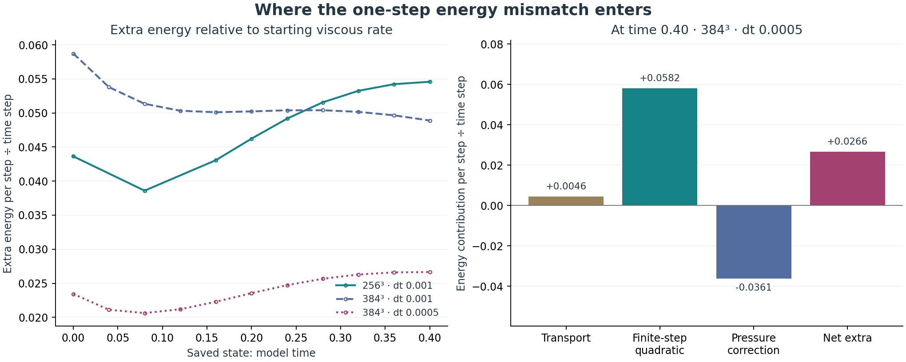
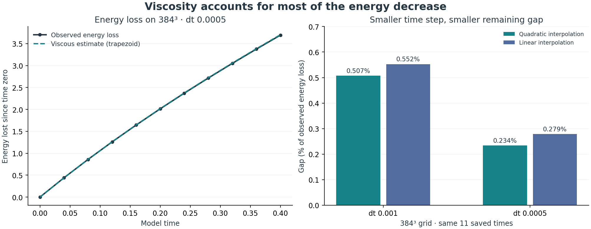
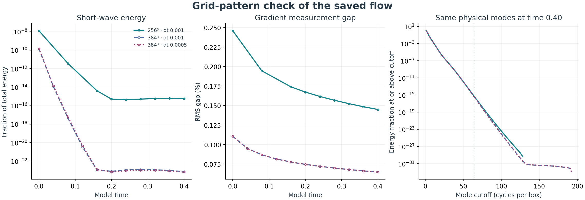
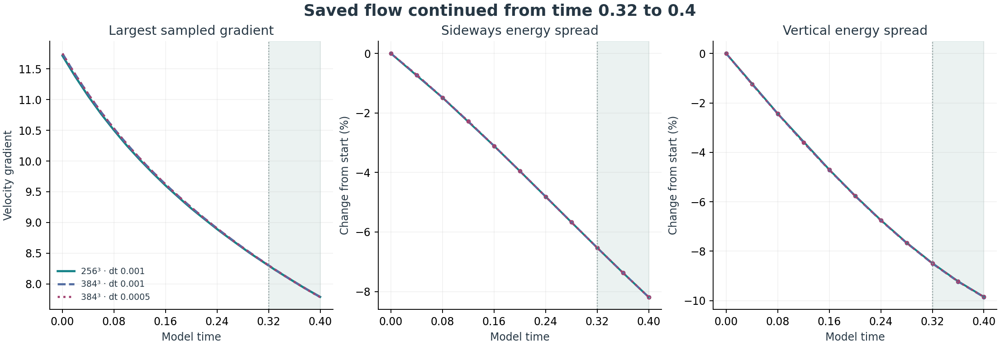
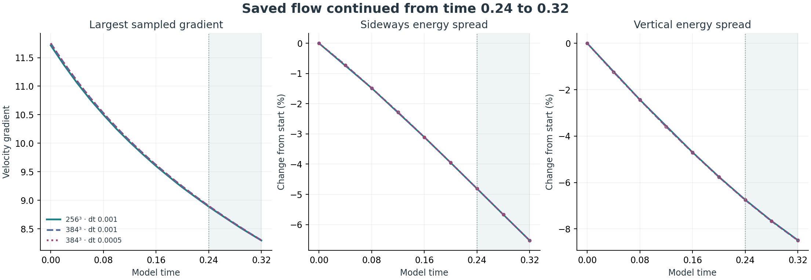
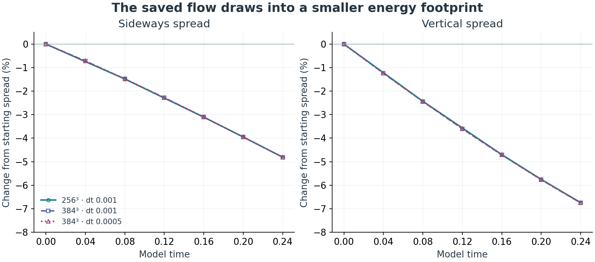
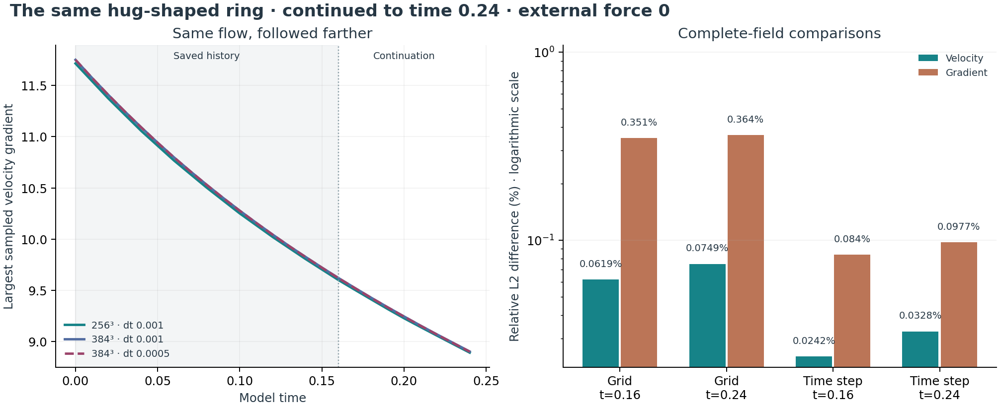

The hug now closes the ring’s boundary.
The actual closed hug shapes your maintained smooth ring’s stream function. The flow becomes smoothly zero before the cube faces, while the inner core retains the original analytic field.
9 new checks passed, along with 7 existing integration checks. Four short runs used the existing cube solver.

Where does the small energy mismatch enter?
The positive finite-step contribution, after pressure correction removes part of it, is the largest non-viscous contribution in every sampled step. Transport adds or removes a smaller amount. All 31 individual steps balance within 5.527e-14 energy units.

Contributions and limits
| Grid | Time step | Viscosity | Transport | Quadratic | Pressure correction | Total | Remainder |
|---|---|---|---|---|---|---|---|
| 256³ | 0.001 | -7.894997e-03 | +1.032523e-05 | +1.163558e-04 | -7.210212e-05 | -7.840418e-03 | +2.758210e-16 |
| 384³ | 0.001 | -7.896792e-03 | +4.598201e-06 | +1.165331e-04 | -7.224011e-05 | -7.847901e-03 | -2.339795e-14 |
| 384³ | 0.0005 | -3.946347e-03 | +2.286770e-06 | +2.909009e-05 | -1.805320e-05 | -3.933024e-03 | +1.098427e-14 |
14 focused checks passed. Actual solver steps ran on disposable copies of 31 saved states. The copies starting at 0.40 are advanced by one step and discarded; the saved trajectory still ends at 0.40. Checkpoint hashes, energies, viscous rates and the numerical-source fingerprint agree with the prior record.
The per-step energy identity closes to roundoff. Integrating sparse probe contributions across the full interval remains approximate. Including the leading viscous time-sampling correction gives 0.008609 for the smaller-step 384³ gap, compared with 0.008637 previously measured. Other endpoint corrections, quadrature uncertainty and unsampled times remain.
No physical-model changes or new external force. This is a numerical diagnosis, not a Clay proof.
Does viscosity account for the energy decrease?
Viscosity accounts for most of the observed energy decrease. On the 384³ half-step run, the two time-integration estimates leave a gap of 0.234% and 0.279% of the observed energy loss. Halving the time step reduces the gap with both estimates; the balance does not close exactly.

Measurements and limits
| Grid | Time step | Saved times | Observed loss | Viscous estimate: quadratic | Gap: quadratic | Gap: linear |
|---|---|---|---|---|---|---|
| 256³ | 0.001 | 9 | 3.686426 | 3.703536 | 0.4641% | 0.5848% |
| 384³ | 0.001 | 11 | 3.686260 | 3.704958 | 0.5073% | 0.5525% |
| 384³ | 0.0005 | 11 | 3.695202 | 3.703839 | 0.2337% | 0.2789% |
A positive gap means the flow retained more energy than viscosity alone predicts. The half-step 384³ estimates differ by 0.0452% of observed loss when the integration method changes. Thinning observations changes the trapezoidal estimate by 0.1356%. These do not bound unsampled behavior.
The loss rate uses the adjacent-cell gradient norm that matches the existing discrete Laplacian. Its identity was checked independently. The residual can include spatial and time discretization and estimation between saved times; it does not isolate the cause of that small remainder.
15 focused checks passed. Reused 31 measurements with recorded provenance. No new flow steps or physical-model changes. The full report also compares matching observation times. No rigorous continuum error bound or Clay proof is established.
Grid-pattern check through time 0.40
The largest measured energy fraction in the seven exact checkerboard modes was 4.061e-22. The broader short-wave band held at most 1.266e-08 of the energy. No substantial hidden checkerboard component was found in these saved arrays.

The two gradient measurements differ by 0.1449% on 256³ and 0.0645% on 384³ at time 0.40 with dt 0.001.
Measurements, verification and limits
| Grid | Time step | Centered RMS | Adjacent-cell RMS | Gap | Energy at modes ≥64 |
|---|---|---|---|---|---|
| 256³ | 0.001 | 1.90905951 | 1.91182926 | 0.144874% | 5.667e-16 |
| 384³ | 0.001 | 1.91081373 | 1.91204658 | 0.064478% | 4.463e-16 |
| 384³ | 0.0005 | 1.91031898 | 1.91155049 | 0.064425% | 4.128e-16 |
15 focused checks passed. 31 observations cover 30 distinct fields; the identical initial field was reused. All 28 checkpoint-file hashes match the earlier record. No solver steps, filtering or external force were added.
This inspects the sampled arrays. It cannot recover content already aliased or above grid resolution, establish exact continuum gradients, or resolve times between checkpoints. Tiny Fourier tails may reflect roundoff; this is not a Clay proof.
Continuation to model time 0.4
The largest sampled velocity gradient decreased at every recorded new time in all three runs. The three runs resumed at time 0.32 with unchanged numerical settings and zero external force.
Grid differences: 0.0875% in velocity, 0.3710% in gradient. Time-step differences: 0.0491% and 0.1245%.

Both energy-weighted widths decreased at the new saved times in all three runs. On the smaller-step 384³ run, the new interval changes sideways spread by -1.7778% and vertical spread by -1.4844%.
Numerical values and checks
| Grid | Step | Gradient 0.32 | Gradient 0.4 | Energy 0.32 | Energy 0.4 | Divergence 0.4 |
|---|---|---|---|---|---|---|
| 256³ | 0.001 | 8.297373 | 7.787213 | 37.303221 | 36.660951 | 1.31e-14 |
| 384³ | 0.001 | 8.301088 | 7.785330 | 37.303918 | 36.661122 | 2.00e-14 |
| 384³ | 0.0005 | 8.298887 | 7.782820 | 37.296414 | 36.652180 | 1.95e-14 |
The unchanged code retains ten passed restart/comparison checks and four passed shape checks. The new data and checkpoint provenance are validated. The earlier interval and its twenty-five shape observations were reused. Six new checkpoints and six new shape observations were added.
Energy widths describe the distribution of motion, not material-boundary displacement. This finite-time study supplies no exact-solution error bound or all-time smoothness proof. The breathing animation is not imposed during fluid evolution.
Evolution results · Evolution table · Shape results · Shape table
Continuation to model time 0.32
The largest sampled velocity gradient decreased at every recorded new time in all three runs. The three runs resumed at time 0.24 with unchanged numerical settings and zero external force.
Grid differences: 0.0829% in velocity, 0.3697% in gradient. Time-step differences: 0.0410% and 0.1099%.

Both energy-weighted widths decreased at the new saved times in all three runs. On the smaller-step 384³ run, the new interval changes sideways spread by -1.8033% and vertical spread by -1.8686%.
Numerical values and checks
| Grid | Step | Gradient 0.24 | Gradient 0.32 | Energy 0.24 | Energy 0.32 | Divergence 0.32 |
|---|---|---|---|---|---|---|
| 256³ | 0.001 | 8.891290 | 8.297373 | 37.981798 | 37.303221 | 1.29e-14 |
| 384³ | 0.001 | 8.902324 | 8.301088 | 37.982804 | 37.303918 | 2.04e-14 |
| 384³ | 0.0005 | 8.900557 | 8.298887 | 37.976874 | 37.296414 | 2.00e-14 |
Ten restart/comparison checks and four shape checks passed. The earlier interval and its nineteen shape observations were reused. Six new checkpoints and six new shape observations were added.
Energy widths describe the distribution of motion, not material-boundary displacement. This finite-time study supplies no exact-solution error bound or all-time smoothness proof. The breathing animation is not imposed during fluid evolution.
Evolution results · Evolution table · Shape results · Shape table
How the motion changes shape
The motion becomes more concentrated: 4.81% narrower sideways and 6.75% narrower vertically. The smaller-step 384³ run gives these changes from time 0 to 0.24. All three runs narrow at every saved snapshot.

These measurements show a narrowing phase. A full breathing cycle would also need an observed widening phase.
What was measured and checked
| Grid | Time step | Sideways change | Vertical change |
|---|---|---|---|
| 256³ | 0.001 | -4.8094% | -6.7420% |
| 384³ | 0.001 | -4.8086% | -6.7558% |
| 384³ | 0.0005 | -4.8084% | -6.7498% |
Faster-moving regions count more in the weighted root mean square widths. These widths describe where motion is concentrated; they do not follow a material boundary. Uniform speed rescaling leaves them unchanged. Uneven slowing and redistribution can change them.
The timed hug animation prepares the start. Its closing and opening are not imposed during the fluid run. We reused sixteen checkpoint files for nineteen measurements and added zero evolution steps. Three targeted checks passed; recomputed energies match the saved diagnostics.
The fixed periodic coordinate cut affects these moments. At most 0.026210% of energy lies in the selected outer face bands. The sampled interval supplies neither a repeating-cycle result nor a rigorous exact-solution error bound.
Continuation to model time 0.24
The largest sampled velocity gradient decreased at every recorded time in all three continuations. Three saved runs continued from time 0.16 with the same settings and zero external force.
Grid differences: 0.0749% in velocity and 0.3639% in its gradient. Time-step differences on 384³: 0.0328% and 0.0977%.

Measurements and verification
| Grid | Time step | Gradient at 0.16 | Gradient at 0.24 | Energy at 0.16 | Energy at 0.24 | Divergence at 0.24 |
|---|---|---|---|---|---|---|
| 256³ | 0.001 | 9.601384 | 8.891290 | 38.706818 | 37.981798 | 1.29e-14 |
| 384³ | 0.001 | 9.620783 | 8.902324 | 38.707794 | 37.982804 | 2.04e-14 |
| 384³ | 0.0005 | 9.619762 | 8.900557 | 38.703592 | 37.976874 | 1.95e-14 |
Exact saved velocities were restored; checkpoints at 0.20 and 0.24 preserve the new work. Eight targeted checks passed. The two 384³ controls retain identical original starting arrays.
These finite-time numerical comparisons provide no rigorous exact-solution error bound or all-time smoothness proof.
384³: half the time step
Halving the time step changes the final velocity field by 0.0242% and the full gradient by 0.0840%. Both time-step differences are smaller than the latest grid differences.
The same hug-shaped field reaches time 0.16 with time steps 0.001 and 0.0005. Initial arrays match exactly, and external force stays zero.

Measurements and verification
| Time step | Steps | Final gradient | Final energy | Final divergence |
|---|---|---|---|---|
| 0.001 | 160 | 9.620783 | 38.707794 | 1.95e-14 |
| 0.0005 | 320 | 9.619762 | 38.703592 | 1.95e-14 |
The 160-step baseline was reused. The new 320-step control has four saved checkpoints. Eight targeted checks passed, including rejection of a changed starting field before evolution and reuse of completed controls.
These are finite-time numerical measurements without a rigorous error bound or an all-time smoothness or breakdown proof.
384³ grid comparison at time 0.16
Both measured differences are smaller on the new grid pair. Velocity difference: 0.3287% → 0.0619%. Full-gradient difference: 1.8051% → 0.3509%.
The new comparison is 256³ vs 384³, at time step 0.001 and final time 0.16. The same ring, equation, viscosity, and zero external force are retained.

Measurements and verification
| Grid | Initial gradient | Final gradient | Final energy | Final divergence |
|---|---|---|---|---|
| 128³ | 11.516387 | 9.490098 | 38.701445 | 6.22e-15 |
| 256³ | 11.715300 | 9.601384 | 38.706818 | 1.31e-14 |
| 384³ | 11.751008 | 9.620783 | 38.707794 | 1.95e-14 |
The numerical source is unchanged. The new field is sampled from the same analytic construction on its own grid. Four checkpoints preserve progress, and the completed 256³ run is reused.
Six targeted checks passed, including the new 3:2 physical-grid alignment check and the existing restart checks. The earlier time-step control was at 256³. The completed 384³ half-step check is shown above.
These finite-time numerical comparisons have no rigorous error bound and do not establish an all-time smoothness or breakdown proof.
Longer run to model time 0.16
The largest sampled gradient decreased at every recorded time in all three continuations. The smaller-step 256³ run goes from 10.500958 at time 0.08 to 9.600445 at time 0.16.
The grid comparison gives 0.3287% velocity difference and 1.8051% gradient difference. The 256³ time-step comparison gives 0.0240% and 0.0819%, respectively.
The differences between calculations grew over the longer interval, while the largest sampled gradient decreased. Spatial differences remain larger than time-step differences in these comparisons.

Continuation measurements and checks
| Grid | Time step | Gradient at 0.08 | Gradient at 0.16 | Energy at 0.16 | Divergence at 0.16 |
|---|---|---|---|---|---|
| 128³ | 0.0010 | 10.348072 | 9.490098 | 38.701445 | 6.22e-15 |
| 256³ | 0.0010 | 10.501479 | 9.601384 | 38.706818 | 1.31e-14 |
| 256³ | 0.0005 | 10.500958 | 9.600445 | 38.702630 | 1.31e-14 |
The same numerical source, field, box, viscosity, and zero-external-force setting were preserved. The scalar stayed zero. Saved velocities were restored exactly, without a new restart projection.
Two continuation checks passed: a small-grid restart matches uninterrupted evolution bit for bit, and a mismatched numerical-source checkpoint is rejected. The result records source and checkpoint hashes.
These finite-time numerical differences do not supply an exact-solution error bound or an all-time smoothness proof.
Next check completed: finer grids
The flow agrees more closely as the grid is refined. At model time 0.08, the velocity difference drops from 0.8613% (64³ vs 128³) to 0.2261% (128³ vs 256³).
The gradient difference drops from 6.1472% to 1.7510%. Halving the time step on the 256³ grid changes the velocity by 0.0140% and its gradient by 0.0582%.
The 256³ half-step check is complete. Its starting array is identical to the 256³ full-step run. All previously completed runs and the earlier 128³ time-step control are preserved.

Result: improving agreement over this short interval. The steepest gradients still depend on grid spacing. External force remains zero.
Measurements and how this was checked
| Grid | Time step | Start gradient | End gradient | End energy | End divergence |
|---|---|---|---|---|---|
| 32³ | 0.0010 | 8.496596 | 8.059470 | 39.407642 | 1.33e-15 |
| 64³ | 0.0010 | 10.710468 | 9.771791 | 39.473866 | 2.89e-15 |
| 128³ | 0.0010 | 11.516387 | 10.348072 | 39.486739 | 5.77e-15 |
| 128³ | 0.0005 | 11.516387 | 10.347793 | 39.484522 | 6.00e-15 |
| 256³ | 0.0010 | 11.715300 | 10.501479 | 39.489805 | 1.27e-14 |
| 256³ | 0.0005 | 11.715300 | 10.500958 | 39.487549 | 1.18e-14 |
Each run uses the same length-6 periodic box, viscosity 0.01, actual hug-shaped ring, and projected sampled start. All advance to time 0.08. Each grid samples the same analytic field; its discrete projection correction can differ.
The optional NumPy backend evaluates the original cube stencils. It was checked against the original loop updates with and without the old forcing term, and against the independent Jacobi projection. In these 6 refinement runs, σ = 0, P_U = 0, and S stays zero.
All 146 repository tests passed in the publication check, including the field, projection, array-backend, and comparison checks. The 256³ extension uses the same numerical source as the completed grid study.
Fields from different cell-centered grids are compared at matching physical positions using periodic cubic interpolation. The gradient difference compares the full centered-gradient tensor. Three checks cover alignment and the error measurement. Centered differences still have checkerboard null modes; roundoff-sized discrete divergence alone is not a proof of accuracy.
This is a finite-time numerical refinement study, without a rigorous error bound or a global smoothness proof.
Refinement results · Measurements by time
Completed next step: The continuation to time 0.16 is recorded above.
What the hug does
- Use the closed ellipse already defined by the hug.
- Retain the smooth ring exactly inside the inner core.
- Soften the stream function through the outer layer, including its derivative terms.
- Reach zero with all derivatives matched before every cube face.
The fluid then evolves under the same unforced Navier–Stokes equation. The hug is initial-data preparation; the earlier animation schedule and pressure-opening rule are not imposed during fluid evolution.
The equation used for the connection
ψ_h = W ψ_original uᵣ = −(1/r) ∂ψ_h/∂z u_z = (1/r) ∂ψ_h/∂r u_θ = W u_θ,original
W is an infinitely smooth spatial weight supplied by the hug’s ellipsoidal enclosure. Applying W before differentiating preserves incompressibility. A separate check confirms that simply masking the velocity would fail this condition.
The Cartesian implementation is smooth at the axis and zero in an open strip next to every cube face. Its periodic extension therefore has matching values and derivatives. No external-force term is added.
Saved short-run measurements
Same final model time 0.08; viscosity 0.01. The raw divergence below is measured with finite differences after sampling. The pressure projection reduces the discrete divergence to roundoff.
| Grid | Step | Raw divergence | Start correction | End divergence | End gradient | End energy |
|---|---|---|---|---|---|---|
| 16³ | 0.02 | 1.352074 | 13.2596% | 8.882e-16 | 5.553309 | 39.006958 |
| 32³ | 0.02 | 0.908968 | 3.3073% | 1.776e-15 | 8.078380 | 39.479609 |
| 64³ | 0.02 | 0.514969 | 0.7831% | 3.553e-15 | 9.768902 | 39.555986 |
| 32³ | 0.01 | 0.908968 | 3.3073% | 1.332e-15 | 8.068097 | 39.441322 |
The initial projection changes the sampled field by 13.26%, 3.31%, and 0.78% on successive grids. The analytic core is unchanged; the discrete correction can modify it. The evolution gradients are not yet spatially converged, so these short runs establish implementation checks rather than a long-time result.
Saved results · Complete numerical rows
This construction uses the existing smooth ring and hug. The separate trigonometric example is not used. The code, measurements, and figures are stored in this repository.